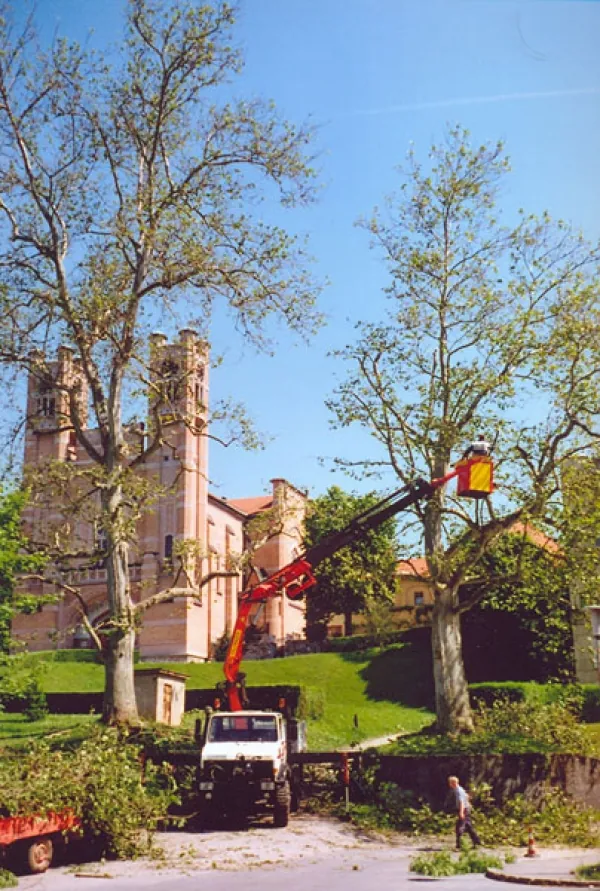

Obžagovanje, obrezovanje in podiranje
- Obžagovanje in posek dreves v vseh situacijah, z avtodvigalom ali plezalno tehniko.
- Kontrolirano podiranje po kosih, kjer drevo ne more pasti v celoti.
- Obrezovanje živih mej in sadnega drevja ter nadomestna zasaditev.
- Odvoz vejevja in lesa takoj po delu.
- Svetovanje glede nege in vzdrževanja dreves.
Dejavnost je zavarovana, zato je vaše premoženje v primeru nezgode krito.
Več o obžagovanju in podiranju